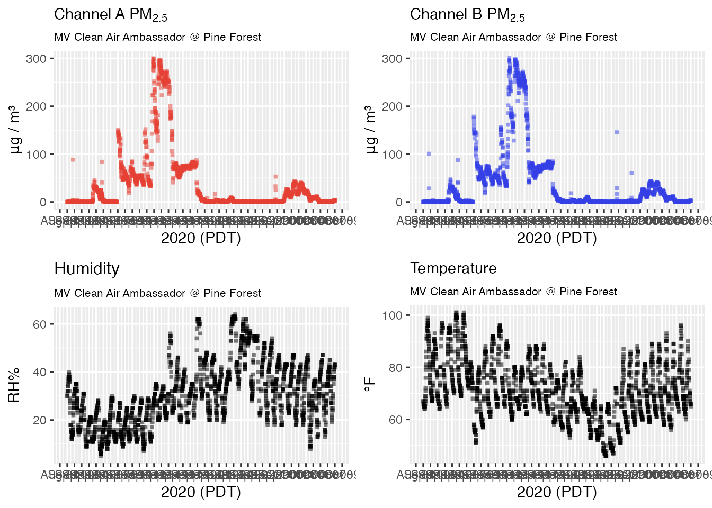
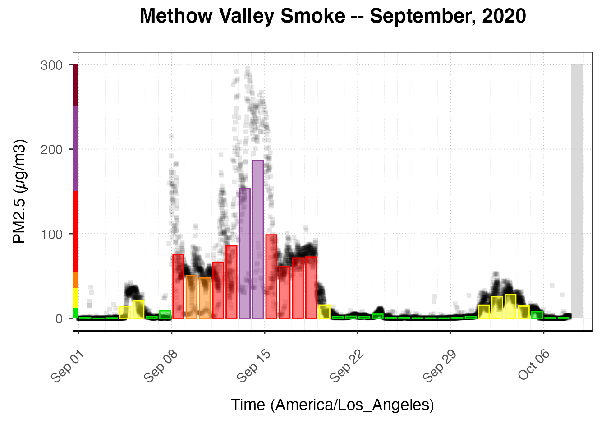

vignettes/articles/MVCAA_Tutorial_5.Rmd
MVCAA_Tutorial_5.RmdThis tutorial demonstrates how to create a multi-month archive of PurpleAir timeseries data that can be loaded from a local archiveBaseDir. Where Tutorial 1 demonstrated how to save and work with a small number of sensors for a single month, this tutorial provides a more organized approach for working with larger networks of sensors over extended periods of time. Target audiences include grad students, researchers and any member of the public concerned about air quality and comfortable working with R and RStudio.
Tutorials in this series include:
The goal in this tutorial is to explain the file naming protocol and directory structure required for data to be loaded using the pat_load() and sensor_load() functions. We will build a multi-month archive for the Methow Valley and demonstrate accessing that data.
The AirSensor package has a variety of “load” functions, all of which assume that pre-generated data files will be found in specific locations underneath an archive directory. The base of this directory is specified by setArchiveBaseUrl() if the archive is web based or setArchiveBaseDir() if the archive is local.
For a multi-year archive, the overall structure beneath the archiveBaseDir will look something like this, depending on how many years of data you have:
├── airsensor
│ ├── 2020
│ ├── 2021
│ └── latest
├── pas
│ ├── 2020
│ └── 2021
├── pat
│ ├── 2019
│ │ ├── 01
│ │ ├── ...
│ │ └── 12
│ ├── 2020
│ │ ├── 01
│ │ ├── ...
│ │ └── 12
│ ├── 2021
│ │ ├── 01
│ │ ├── 02
│ │ └── 03
│ └── latestThe protocol for creating pre-generated edata files depends on the type of object being created.
<archiveBaseDir>/airsensor/<YYYY>/
airsensor_<collectionName>_<YYYYMM>.rda
~/Data/MVCAA/airsensor/2020/airsensor_mvcaa_202009.rda
NOTE: <collectionName> is an arbitrary character string defined by the user.
When loading data, package ~_load() functions look for any local archive specified with setArchiveBaseDir(). If no local archive is found, a web based archive is searched at the URL specified with setArchiveBaseUrl(). Mazama Science maintains a small archive of data associated with the South Coast Air Quality Management District at: https://airsensor.aqmd.gov/PurpleAir/v1/.
Package functions that load pre-generated data files include:
pas_load()pat_load()pat_loadLatest()pat_loadMM()sensor_load()sensor_loadLatest()sensor_loadMM()To avoid internet latency, specification of archiveBaseDir will always take precedence over specification of archiveBaseUrl. For this reason, if you previously set archiveBaseDir and you then want to load data from some archiveBaseUrl, you will have to first: setArchiveBaseDir(NULL).
The following R script will take several minutes to run and will create an archive of ‘pat’ and ‘airsensor’ data files on your computer. Once these files have been created, loading them will be very fast.
After running the script, a final section will demonstrate how to load and work with these local data files.
This R script can be used as a starting point for anyone interested in creating small collections of data for other communities and other dates.
# Methow Valley local data archive: Setup
# NOTE: https://mazamascience.github.io/MazamaCoreUtils/articles/logging.html
library(MazamaCoreUtils) # for logging
library(AirSensor)
# ----- Setup ------------------------------------------------------------------
# Have log messages sent to the console
MazamaCoreUtils::logger.setLevel(TRACE)
# Use the default archiveDir unless it is already defined
if ( !exists("archiveDir") ) {
archiveDir <- file.path("~/Data/MVCAA")
}
# Set the package archiveBaseDir so we can load pat objects with `pat_load()`
setArchiveBaseDir(archiveDir)
# ----- Get PAS object ---------------------------------------------------------
# NOTE: We won't use the archive directories for the pas object because we
# NOTE: already have exactly what we want in our `mvcaa.rda` file.
mvcaa <- get(load(file.path(archiveDir, "mvcaa.rda")))
# ----- Prepare PAT info -------------------------------------------------------
# Get all the deviceDeploymentIDs
mvcaa_ids <- pas_getDeviceDeploymentIDs(mvcaa)
# Set up months
timezone <- "America/Los_Angeles"
monthStamps <- c(202009, 202010, 202011)
# Loop over months
for ( monthStamp in monthStamps ) {
logger.debug("Working on monthStamp %s ---------- ...", monthStamp)
# Get POSXct startdate
startdate <- MazamaCoreUtils::parseDatetime(monthStamp, timezone = timezone)
# Guarantee that the enddate is the first of the next month
enddate <- lubridate::floor_date(
startdate + lubridate::ddays(40),
unit = "month"
)
# Get YYYY and MM strings
YYYY <- strftime(startdate, "%Y")
MM <- strftime(startdate, "%m")
# Initialize counters
idCount <- length(mvcaa_ids)
count <- 0
successCount <- 0
# ----- Create PAT objects ---------------------------------------------------
# Create the archiveDir/pat/YYYY/MM/ directory
dir.create(
file.path(archiveDir, "pat", YYYY, MM),
showWarnings = FALSE,
recursive = TRUE
)
# Loop over all deviceDeploymentIDs
for ( id in mvcaa_ids ) {
# Create PAT canonical file name
fileName <- paste0("pat_", id, "_", YYYY, MM, ".rda")
# Create PAT canonical file path
filePath <- file.path(archiveDir, "pat", YYYY, MM, fileName)
count <- count + 1
logger.debug("Working on %s (%d/%d) ...", id, count, idCount)
# Use a try-block in case you get "no data" errors
result <- try({
# Create PAT
pat <- pat_createNew(
id = id,
label = NULL, # not needed if you have the id
pas = mvcaa,
startdate = startdate,
enddate = enddate,
timezone = timezone,
baseUrl = "https://api.thingspeak.com/channels/",
verbose = FALSE
)
successCount <- successCount + 1
save(pat, file = filePath)
}, silent = FALSE)
if ( "try-error" %in% class(result) ) {
logger.error(geterrmessage())
}
}
# ------ Create AirSensor objects --------------------------------------------
# Create the archiveDir/airsensor/YYYY/ directory
dir.create(
file.path(archiveDir, "airsensor", YYYY),
showWarnings = FALSE,
recursive = TRUE
)
# Assign a collection name that makes sense
collectionName <- "mvcaa"
# Init counts
successCount <- 0
count <- 0
dataList <- list()
# Loop over all ids and aggregate to hourly
for ( id in mvcaa_ids ) {
count <- count + 1
# Debug info
logger.debug(
"%4d/%d Calling pat_createAirSensor('%s')",
count,
length(mvcaa_ids),
id
)
# Load the pat data, convert to an airsensor and add to dataList
dataList[[id]] <- tryCatch(
expr = {
airsensor <- pat_load(
id = id,
label = NULL,
pas = mvcaa,
startdate = startdate,
enddate = enddate,
timezone = "America/Los_Angeles"
) %>%
pat_createAirSensor(
FUN = AirSensor::PurpleAirQC_hourly_AB_01
)
},
error = function(e) {
logger.warn('Unable to load PAT data for %s ', id)
NULL
}
# Keep going in the face of errors
)
} # END of deviceDeploymentIDs loop
# Combine the airsensors into a single airsensor object and save
tryCatch(
expr = {
logger.info('Combining airsensors...')
airsensor <- PWFSLSmoke::monitor_combine(dataList)
class(airsensor) <- c("airsensor", "ws_monitor", "list")
logger.info('Combined successfully...')
# Create Airsensor canonical file name
fileName <- paste0("airsensor_", collectionName, "_", YYYY, MM, ".rda")
# Create Airsensor canonical file path
filePath <- file.path(archiveDir, "airsensor", YYYY, fileName)
save(list = "airsensor", file = filePath)
},
error = function(e) {
msg <- paste("Error creating monthly AirSensor file: ", e)
logger.error(msg)
}
)
# Now proceed to the next month
}Our local archive of data was created following the directory and file naming protocol. We can now work with this archive by running setArchiveBaseDir().
library(AirSensor)
library(AirMonitorPlots)
# Use the tutorial default archiveDir unless it is already defined
if ( !exists("archiveDir") ) {
archiveDir <- file.path("~/Data/MVCAA")
}
# Set your archive base directory and check that is correct
setArchiveBaseDir(archiveDir)
getArchiveBaseDir()## [1] "~/Data/MVCAA"
# Load the custom pas file directly
mvcaa <- get(load(file.path(archiveDir, "mvcaa.rda")))
# Use the interactive map to quickly get the "deviceDeploymentID" of the sensors
# you want to explore further based on their location.
pas_leaflet(mvcaa)
# However, data for a specific sensor might not be available for a given month.
# You can make sure to have the expected pat file in your month directory by
# looking for that file.
list.files(file.path(archiveDir, "pat/2020/09"))## [1] "pat_0cbfeb2ce4c1553c_13661_202009.rda"
## [2] "pat_2e3b5ceea86a885b_10168_202009.rda"
## [3] "pat_49215ad49d1a87e3_10188_202009.rda"
## [4] "pat_4a47b9252e16e558_15077_202009.rda"
## [5] "pat_4f19d256e1787973_10166_202009.rda"
## [6] "pat_96b108298883ca47_64441_202009.rda"
## [7] "pat_ab5dca99422f2c0d_13669_202009.rda"
## [8] "pat_db5d6b3b79f5830e_39237_202009.rda"
## [9] "pat_f592adb5067ad9d3_13675_202009.rda"
## [10] "pat_f6c44edd41c941c7_10182_202009.rda"
## [11] "pat_f736fd3fb21fc4da_13667_202009.rda"
## [12] "pat_f96deab8c29aa42b_10134_202009.rda"
# Load specific days of pat data for Pine Forest
Pine_Forest <-
pat_load(
id = "0cbfeb2ce4c1553c_13661",
pas = mvcaa,
startdate = 20200901,
enddate = 20201008,
timezone = "America/Los_Angeles"
)
# Basic plot for Pine_Forest
pat_multiplot(Pine_Forest)
# Load the all-hourly-data-combined sensor object
all_sensors <-
sensor_load(
collection = "mvcaa", # collectionName defined by user
startdate = 20200901,
enddate = 20201008,
timezone = "America/Los_Angeles"
)
# Plot all hourly values with daily averages
all_sensors %>%
AirMonitorPlots::ggplot_pm25Timeseries() +
ggplot2::ggtitle("Methow Valley Smoke -- September, 2020") +
AirMonitorPlots::geom_pm25Points(shape = "square", alpha = .1) +
AirMonitorPlots::stat_dailyAQCategory(alpha = .5) +
ggplot2::scale_y_continuous(limits = c(0, 300)) +
AirMonitorPlots::custom_aqiStackedBar(width = 0.01) 
Best of luck assessing air quality in your community!